External Policy Paper Library
RESEARCH
LIBRARY
The institutional, academic, and policy research behind the Alternative Asset Literacy curriculum. Spanning stablecoins, CBDC, ESG sustainability, cross-border payments, behavioral economics, and gender lens investing.
Loading research library...
Gallery
All artwork featured in this application is in the public domain or used under fair use for educational purposes. Original works have been cropped and overlaid with typography for educational context. Institutional sources are noted with each piece.
Tulip Mania & the Dutch Golden Age
The Netherlands, 1634–1637
The artwork featured in this application is drawn from the Dutch Golden Age and its artistic descendants. This period coincided with history's first recorded speculative bubble. At its peak in February 1637, a single Semper Augustus tulip bulb sold for more than ten times the annual income of a skilled craftsman. When the tulip market collapsed, it affected traders across every social class in the Dutch Republic.
The Dutch Golden Age (roughly 1588–1672) was a period of extraordinary wealth and cultural achievement in the Netherlands. The Dutch East India Company, founded in 1602, became the world's first publicly traded company. Amsterdam's merchant class fueled an unprecedented boom in art patronage, producing masters like Rembrandt, Vermeer, and Hals. Still life painting — particularly floral compositions — flourished as a genre during this exact period, reflecting both the era's prosperity and its fascination with beauty and impermanence. The paintings below were created in this world.
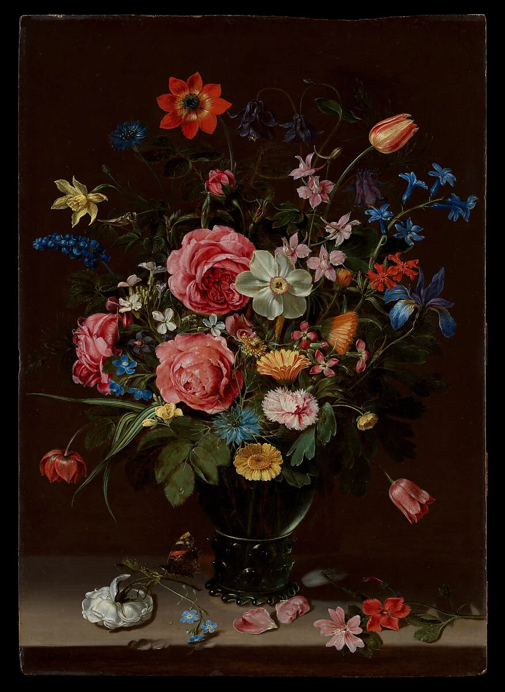
A Bouquet of Flowers
Clara Peeters, Flemish, ca. 1612
Oil on panel · The Metropolitan Museum of Art
One of the earliest documented women painters in European art history. Peeters was active in Antwerp and specialized in still life and banquet scenes. At least five of her signed works survive, and she is believed to have included self-portraits reflected in the metalware she painted.
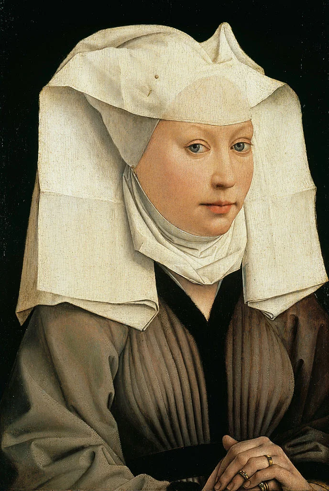
Portrait of a Young Woman in a Pinned Hat
Rogier van der Weyden, ca. 1435
Oil on panel · Gemäldegalerie, Berlin
A masterwork of the Early Netherlandish school. Van der Weyden served as the official painter of Brussels and was one of the most influential Northern European artists of the 15th century. His portraits are known for their emotional depth, delicate modeling, and restrained compositions.
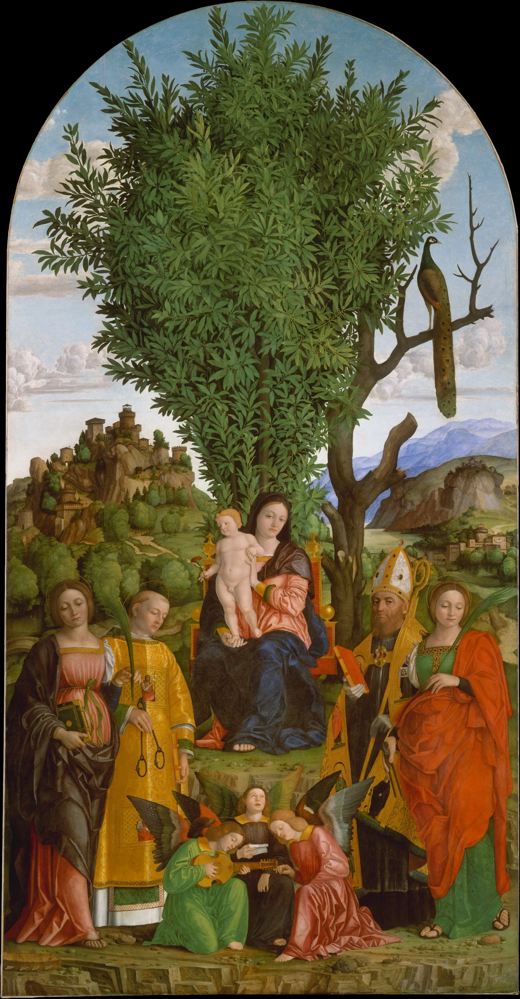
Madonna and Child Enthroned with Saints
School of Ferrara, early 16th century
Oil on panel · The Metropolitan Museum of Art
An Italian Renaissance altarpiece attributed to the School of Ferrara. The Ferrarese school flourished under the patronage of the Este family and was known for its distinctive blend of decorative richness and spatial experimentation, bridging the styles of Mantegna and the Venetian masters.
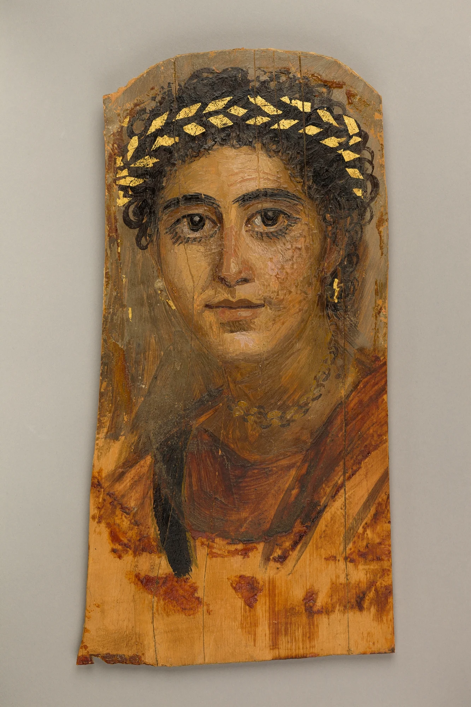
Fayum Mummy Portrait of a Young Woman
Unknown artist, Roman Egypt, ca. 2nd century AD
Encaustic on wood · The Metropolitan Museum of Art
Among the earliest surviving realistic portraits in Western art history. Fayum mummy portraits were created in Roman-occupied Egypt using encaustic (hot wax) technique on wooden panels. They were placed over the faces of mummified remains. Roughly 900 examples survive, offering a rare glimpse of everyday faces from the ancient world.
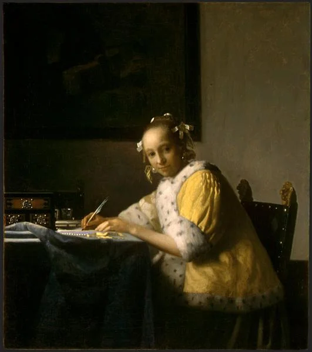
A Lady Writing
Johannes Vermeer, ca. 1665
Oil on canvas · National Gallery of Art, Washington, D.C.
Vermeer produced only about 34 known paintings in his lifetime. His work is celebrated for its masterful treatment of light, quiet domestic scenes, and meticulous compositions. This painting depicts a woman pausing mid-letter and exemplifies Vermeer's signature use of natural light falling from the left.
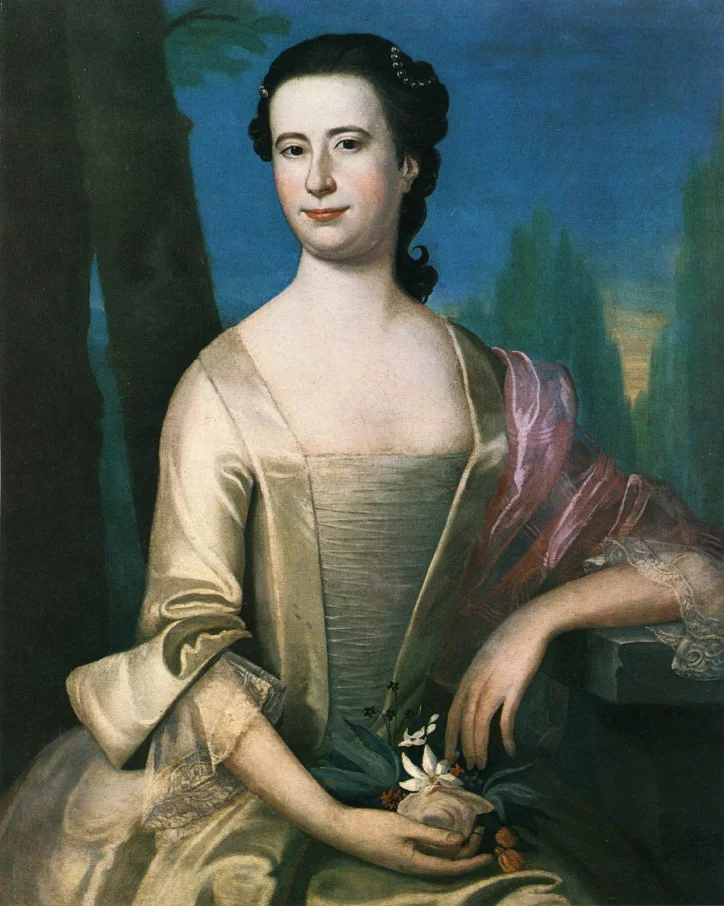
Portrait of a Woman
John Singleton Copley, 1755
Oil on canvas · Private Collection
Copley was the leading portraitist in colonial America before the Revolution. Largely self-taught, he developed a precise, realist style that rivaled his European contemporaries. He emigrated to London in 1774, where he spent the rest of his career and became a member of the Royal Academy.
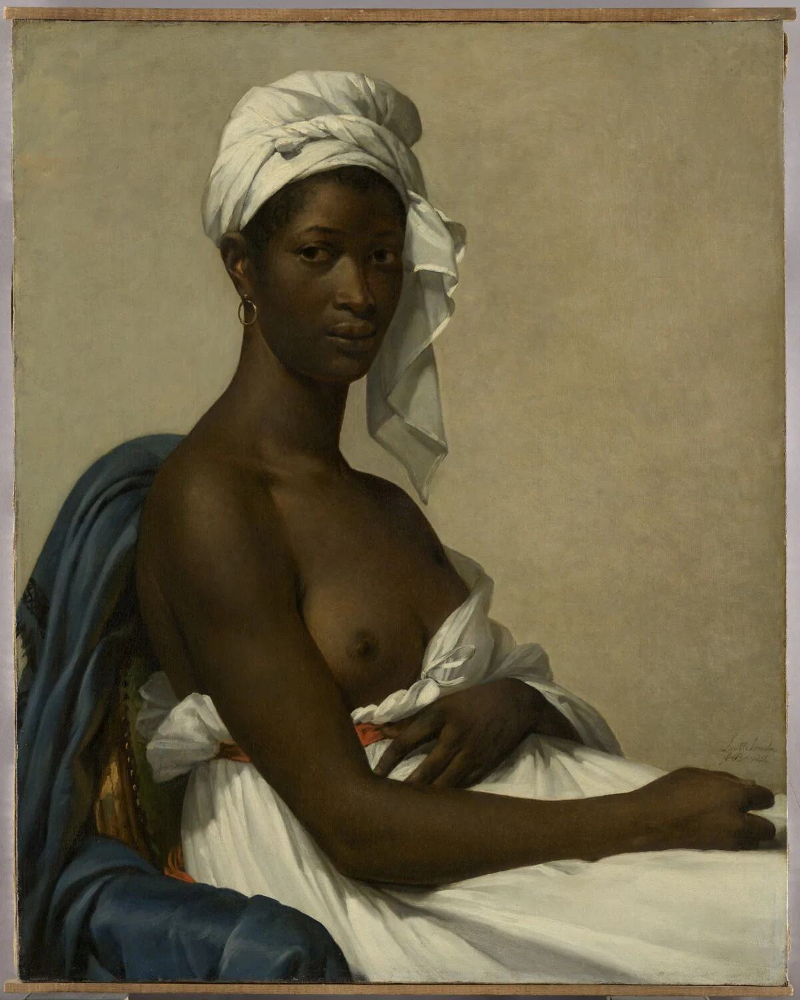
Portrait of Madeleine
Marie-Guillemine Benoist, 1800
Oil on canvas · Musée du Louvre, Paris
Painted in 1800, six years after the French abolition of slavery. Benoist studied under both Jacques-Louis David and Élisabeth Vigée Le Brun. The painting was exhibited at the Paris Salon and is considered a landmark in the depiction of Black subjects with dignity and individuality in European art.
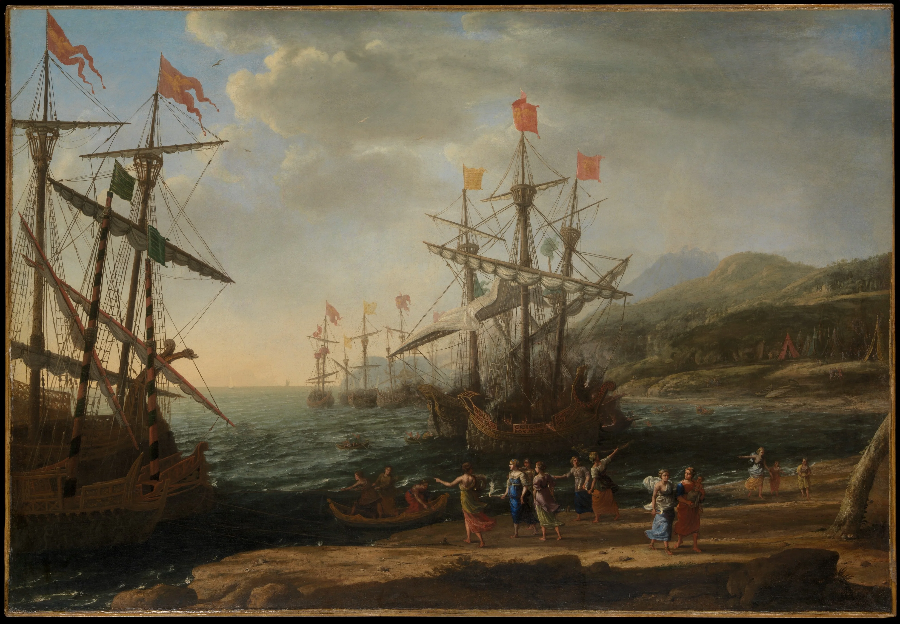
Seaport Scene
Claude Lorrain (attributed), ca. 17th century
Oil on canvas · The Metropolitan Museum of Art
Claude Lorrain was a French painter who spent most of his career in Rome. He is considered the founder of ideal landscape painting, known for his luminous depictions of harbors, ruins, and pastoral scenes bathed in warm, golden light. His compositions influenced generations of landscape artists across Europe.
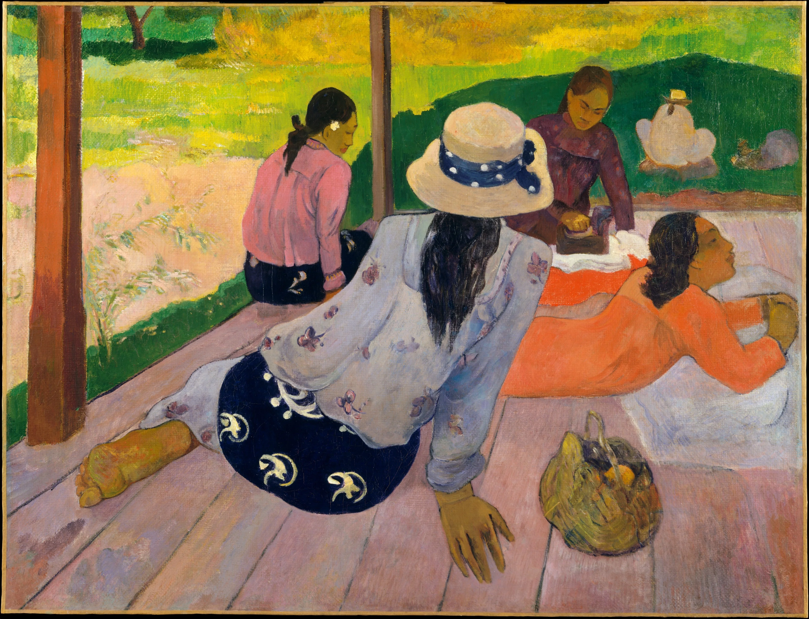
The Siesta
Paul Gauguin, ca. 1892–94
Oil on canvas · The Metropolitan Museum of Art
Gauguin left Paris for Tahiti in 1891, seeking what he called a more “primitive” and authentic way of life. His Polynesian paintings are characterized by bold, flat color fields and simplified forms influenced by Japanese prints and Javanese art. He is considered a leading figure in Post-Impressionism and a precursor to modern art.
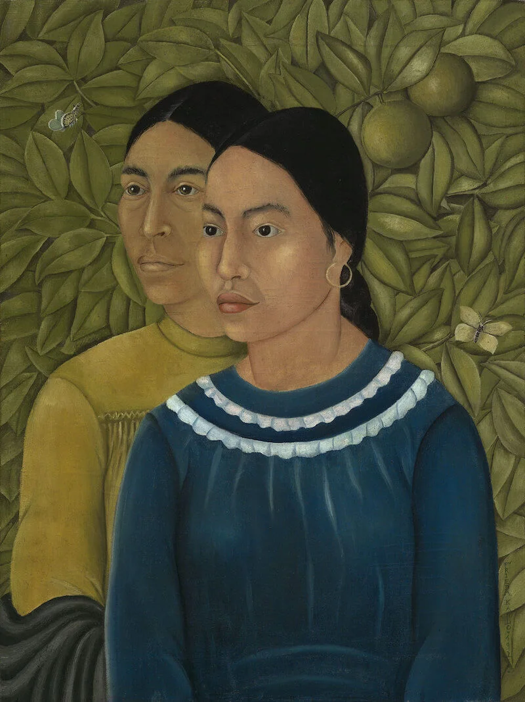
Dos Mujeres (Salvadora y Herminia)
Frida Kahlo, 1928
Oil on canvas · Museum of Fine Arts, Boston
An early work by Kahlo, painted the same year she married Diego Rivera. Kahlo is one of Mexico's most recognized artists, known for her vivid self-portraits and works rooted in Mexican folk art, identity, and personal experience. She produced approximately 200 paintings during her lifetime, the majority of which were self-portraits.
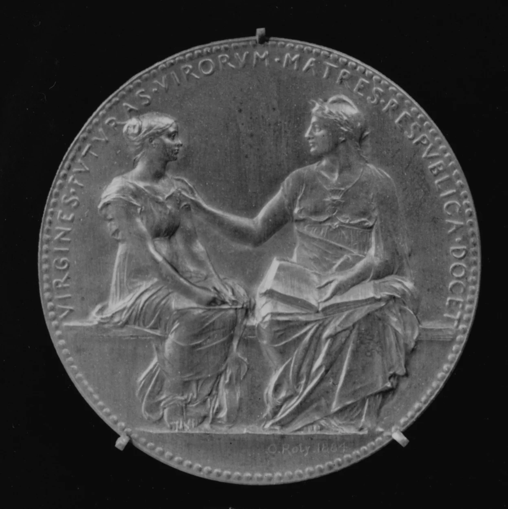
Public Secondary Education of Young Women
Louis-Oscar Roty, 1884
Bronze medal · The Metropolitan Museum of Art
This medal commemorates the Camille Sée Law of 1880, which established public secondary education for young women in France. Roty was one of France's most prominent medallists and is best known for designing the iconic Semeuse (the sower) that appeared on French coins for over a century. The Latin inscription reads “The Republic teaches young women, future mothers of men.” This medal serves as the basis for the app icon.